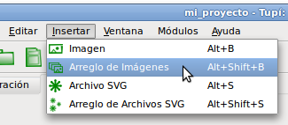
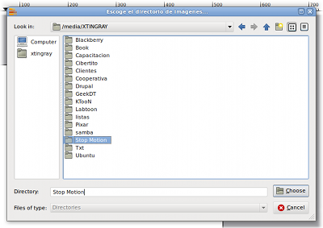
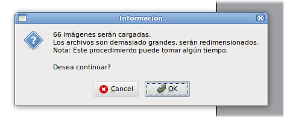

[Under Translation]
¿Stop Motion? "It's possible."
As already mentioned in the introduction to this book, Stop Motion
animation is a technique based on photographs. We say that the
videos from these types of animation are usually pretty fun. Okay,
now the big question: I can do with Tupi Stop
Motion?
The short answer is yes, however, the component dedicated to this
subject still needs much work. For now, the interface allows
animation exercises simple, but future goals are more
ambitious.
For now, let's see how to create a short video using this
technique:
- Get a digital camera. Since this kind of animations are based
on photographs, the camera is vital.
- Build script for your story, following the tips mentioned in
the " First! "
- Get the resources you need for your story: objects, people,
etc..
- Set your camera on a fixed point (eg a table or a tripod)
pointing to the place where you do your scene and make sure that
the camera can not move sideways. Locate your resources at the
scene, as you who are at the beginning of the animation.
- Begins to take a photo every move you make on objects or people
on the scene, according to defined in your script. Remember that
every movement must be small, since it depends in the end, your
animation looks very smooth.
- Once you've captured every moment of history that you require
for your scenes, connect your camera to your computer and download
all the photos in a folder.
- Open Tupi and create a new
project .
- Now select the Insert menu located at the top and choose
the arrangement of Images. A dialog box opens, asking you to
select the directory where you saved the pictures to your
animation.

Fig # 65. Option to insert a Picture
Arrangement
- Pressing the OK button, the program will load each of
your images in a separate frame and in alphabetical order in which
files are located within the directory.

Fig # 66. Directory selection dialog
that contains the images
- If your images are very large, the program will be forced to
resize them, as if they are many and are all larger than 1 MB, it
is likely that your machine runs out of memory and the program to
crash.

Fig # 67. Informational message when
inserting images
- When the process of importing images, you can take a look at
your project in the Animation tab (the second in the
workspace from left to right).
- From this point, you have two options: you can export your
project as a video file, or you can do some editing on the images
you want using the tools of enlightenment.
- If you like what you saw and want to convert video, return to
the Animation tab and click the Export button located
on the bottom panel.
- Follow the usual steps of export as described in the previous
section: " We believe a video file
"and you're done! Stop your Motion project is a
reality!